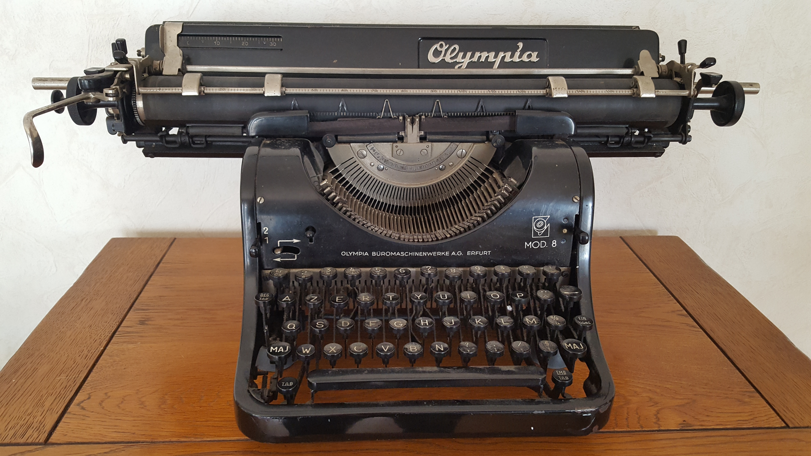
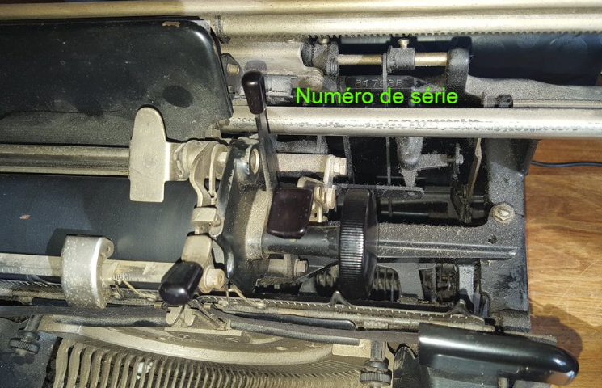

Comme c'est parfois le cas, le fournisseur/distributeur a riveté sa plaque sur le panneau arrière.


La machine est présentée telle que reçue, avant tout nettoyage, démontage.
Elle est de marque Olympia, modèle 8, et a été fabriquée en 1948 à Erfurt, une ville située en Allemagne.
Sa date de fabrication n'est pas inscrite, mais peut être connue grace à son numéro de série et le site typewriterdatabase.com

Le numéro de série est gravé en haut à droite du châssis, sur l'arrière.
Comme c'est parfois le cas, le fournisseur/distributeur a riveté sa plaque sur le panneau arrière.